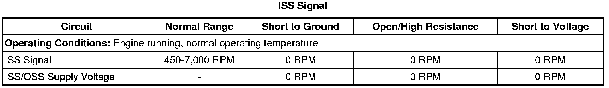
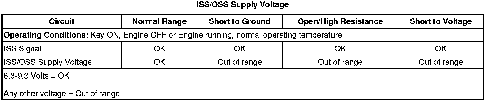

6L50/6L80/6L90 - Automatic Transmission
DTC P0716 or P0717
Diagnostic Instructions
* Perform the Diagnostic System Check - Vehicle (Initial Inspection and Diagnostic Overview) prior to using this diagnostic procedure.
* Review Strategy Based Diagnosis (Initial Inspection and Diagnostic Overview) for an overview of the diagnostic approach.
* Diagnostic Procedure Instructions (Initial Inspection and Diagnostic Overview) provides an overview of each diagnostic category.
DTC Descriptors
DTC P0716
- Input Speed Sensor Performance
DTC P0717
- Input Speed Sensor Circuit Low Voltage
Diagnostic Fault Information

Typical Scan Tool Data


Circuit/System Description
The automatic transmission (AT) input and output speed sensor (ISS and OSS) assembly each are part of a single harness. The ISS is a hall-effect type sensor. The sensors mount to the control valve upper body assembly. The assembly connects to the control solenoid (w/body and TCM) valve assembly through a 3-wire harness and connector. The sensor end faces the 1-2-3-4 and 3-5-R clutch housing machined teeth surface. The sensor receives 8.3-9.3 volts on the input/output speed sensor (ISS/OSS) Supply Voltage circuit from the transmission control module (TCM). As the 1-2-3-4 and 3-5-R clutch housing rotates, the sensor produces a signal frequency based on the machined surface of the clutch housing. This signal is transmitted through the ISS signal circuit to the control solenoid (w/body and TCM) valve assembly. The control solenoid (w/body and TCM) valve assembly uses the ISS signal to determine line pressure, transmission shift patterns, torque converter clutch (TCC) slip speed and gear ratio.
Conditions for Running the DTC
P0716
* No ISS DTC P0716 active or have failed this key on.
* No OSS DTCs P0722 or P0723.
* The engine run time is greater than 5 seconds.
* Engine torque is between 0-1492 N.m (0-1100 lb ft).
* Ignition voltage is between 8.6-18.0 volts.
* The vehicle speed is greater than 0 km/h (0 mph).
* The calculated throttle position must be greater than 0 percent.
P0717
* No ISS DTC P0717 active or have failed this key on.
* Ignition voltage is between 8.6-18.0 volts.
* The TCM must receive a valid torque signal from the ECM.
* No OSS DTCs P0722 or P0723.
* The vehicle speed is greater than 16 km/h (10 mph).
* The engine torque is greater than 50 N.m (37 lb ft).
Conditions for Setting the DTC
P0716
* The TCM detects an unrealistic drop in input shaft speed.
* ISS DTC P0716 is not failed this ignition.
* Transmission input speed is 686 RPM or greater for 2 seconds.
* Transmission input speed drops 653 RPM and does not recover within 0.80 seconds.
P0717
Transmission input shaft speed is less than 65 RPM for 4.5 seconds.
Action Taken When the DTC Sets
* P0716 and P0717 are Type A DTCs.
* The TCM freezes transmission adaptive functions.
* The TCM turns OFF all solenoids.
* The TCM inhibits TU/TD functions.
Conditions for Clearing the DTC
P0716 and P0717 are Type A DTCs.
Diagnostic Aids
Inspect the ISS, harness, connector, and control solenoid (w/body and TCM) valve assembly pins for metallic debris and the 1-2-3-4 and 3-5-R clutch housing machined teeth surface for damage or misalignment. Proper torque of the OSS mounting bolt is critical to proper OSS operation. Use the terminal test kit for any test that requires probing the control solenoid (w/body and TCM) valve assembly harness connector or a component harness connector.
Reference Information
Schematic Reference
Automatic Transmission Controls Schematics (Electrical Diagrams)
Connector End View Reference
Component Connector End Views (Connector Views)
Electrical Information Reference
* Circuit Testing (Component Tests and General Diagnostics)
* Connector Repairs (Component Tests and General Diagnostics)
* Testing for Intermittent Conditions and Poor Connections (Component Tests and General Diagnostics)
* Wiring Repairs (Component Tests and General Diagnostics)
Description and Operation
Electronic Component Description (Electronic Component Description)
DTC Type Reference
Powertrain Diagnostic Trouble Code (DTC) Type Definitions (Diagnostic Trouble Code Descriptions)
Scan Tool Reference
Control Module References (Programming and Relearning) for scan tool information
Circuit/System Verification
Start the engine in Park and observe the transmission ISS on the scan tool while varying the engine speed. The transmission ISS should vary with the engine speed and not drop out.
Circuit/System Testing
1. With the ignition ON, observe the transmission ISS/OSS supply voltage circuit status on the scan tool, the parameter should display OK. The ISS supply voltage should be 8.3-9.3 volts.
• If the circuit status does not display OK, disconnect the ISS/OSS connector from the control solenoid (w/body and TCM) valve assembly and recheck the scan tool display.
• If the transmission ISS/OSS supply voltage circuit status still displays OK, visually inspect the ISS, harness, connector, the control solenoid (w/body and TCM) valve assembly pins for metallic debris and 1-2-3-4 and 3-5-R clutch housing machined teeth surface for damage or misalignment. Repair or replace any damaged components.
2. Perform the Control Solenoid Valve and Transmission Control Module Assembly Input Shaft Speed/Output Shaft Speed Input Test (Control Solenoid Valve and Transmission Control Module Assembly Input Shaft Speed/Output Shaft Speed Input Test) . The scan tool should display Transmission ISS between 100-400 RPM.
• If 100-400 ISS RPM is displayed, replace the ISS/OSS assembly.
• If no ISS RPM is displayed or the RPM is out of range, replace the control solenoid (w/body and TCM) valve assembly.
Component Testing
Perform the Control Solenoid Valve and Transmission Control Module Assembly Input Shaft Speed/Output Shaft Speed Input Test (Control Solenoid Valve and Transmission Control Module Assembly Input Shaft Speed/Output Shaft Speed Input Test) .
Repair Instructions
Perform the Diagnostic Repair Verification (Verification Tests) after completing the diagnostic procedure.
* Perform the Input and Output Speed Sensor Replacement (6L50/6L80/6L90 - Automatic Transmission) .
* Control solenoid (w/body and TCM) valve assembly - refer to Control Module References (Programming and Relearning) for replacement, setup, and programming.
* Perform the Control Solenoid Valve and Transmission Control Module Assembly Inspection (Control Solenoid Valve and Transmission Control Module Assembly Inspection) .
* Perform the Control Solenoid Valve and Transmission Control Module Assembly Input Shaft Speed/Output Shaft Speed Input Test (Control Solenoid Valve and Transmission Control Module Assembly Input Shaft Speed/Output Shaft Speed Input Test) .
* Perform the Service Fast Learn Adapts (Programming and Relearning) if internal transmission repairs are performed.